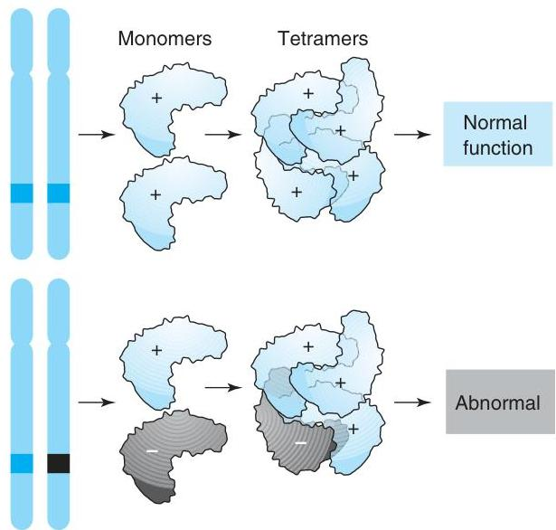

Molecular Detection of Inherited Diseases
Molecular and cytogenetic analyses are a critical component of diagnostic testing, especially for diseases that arise from known genetic events. The identification of a molecular or chromosomal abnormality is a direct observation of the source of some diseases. This chapter presents examples of clinical laboratory tests commonly performed in molecular genetics.
Key Definitions
- Mutation: Heritable change in DNA nucleotide sequences.
- Polymorphism: Proportionately represented genotype in a given population.
- Epigenetic Alteration: Change that does not alter the primary DNA sequence (e.g., methylation, imprinting).
Chromosomal Abnormalities
Genome mutations (abnormalities in chromosome number) and structural mutations can be detected by karyotyping and FISH. Aneuploidy (gain or loss of autosomes) occurs frequently in spontaneous abortions and specific syndromes.
| Disorder | Genetic Abnormality | Incidence |
|---|---|---|
| Down's syndrome | Trisomy 21 (47,XY,+21) | 1/700 |
| Edward's syndrome | Trisomy 18 (47,XY,+18) | 1/3000 |
| Patau's syndrome | Trisomy 13 (47,XY,+13) | 1/5000 |
| Klinefelter's syndrome | 47,XXY | 1/850 |
| Turner's syndrome | 45,X | 1/2000 |
| Disorder | Genetic Abnormality | Clinical Features |
|---|---|---|
| DiGeorge/VCFS | del(22q) | CATCH 22 (Cardiac, Abnormal facies, T-cell deficit, Cleft palate, Hypercalcemia) |
| Cri du chat | del(5p) | Catlike cry, microcephaly |
| Wilms' tumor/Aniridia | del(11p) | Aniridia, hemihypertrophy |
Patterns of Inheritance
Patterns of inheritance are determined by examination of family histories (pedigrees). The main transmission patterns are autosomal-dominant, autosomal-recessive, and X-linked recessive.
Autosomal Dominant
Heterozygous individuals express the phenotype. Recurrence risk is 50–100%.

Autosomal Recessive
Phenotype displayed only in homozygotes. Heterozygotes are carriers.
X-Linked Recessive
Carried by females but manifested most often in males (hemizygous).
Dominant Negative Mutations
In multimeric proteins, a single mutant monomer can interfere with the function of the normal proteins produced from the unmutated chromosome, causing a dominant negative phenotype.
Single-Gene Disorders
Single-gene disorders affect structural proteins, cell surface receptors, growth regulators, and enzymes. Molecular diagnosis targets specific gene lesions.
| Disease | Gene | Mutation Type | Method |
|---|---|---|---|
| Sickle cell anemia | Beta-globin | Missense | Sequencing, PCR-RFLP |
| Cystic fibrosis | CFTR | Deletion (F508del) | PCR, Reverse Dot Blot |
| Muscular dystrophy | Dystrophin | Deletion | Multiplex PCR |
| Hemochromatosis | HFE | Missense (C282Y) | PCR-RFLP |
| Factor V Leiden | Factor V | Missense (R506Q) | PCR-RFLP, SSP-PCR |
Lysosomal Storage Diseases
These disorders result from incompletely digested macromolecules due to loss of enzyme function in the lysosome. They are typically autosomal recessive.
Molecular Diagnosis of Specific Disorders
Factor V Leiden
The Leiden mutation (1691 G&to;A, R506Q) in the coagulation factor V gene causes resistance to activated protein C, leading to a hypercoagulable state (thrombophilia). Heterozygotes have a 5–7 fold increased risk of thrombosis; homozygotes have an 80-fold risk.
PCR-RFLP Detection
The mutation destroys an MnlI restriction site. Normal alleles yield 3 fragments; mutant alleles yield 2.
SSP-PCR Detection
Sequence-specific primers end on the mutation site. Amplification occurs only if the specific allele is present.
Hemochromatosis
An autosomal-recessive disorder causing iron overload. It is linked to the HFE gene (6p21.3). The most common mutation is C282Y (G&to;A transition), found in ~10% of the white population. Other mutations include H63D and S65C.
Diagnosis: The C282Y mutation creates a new RsaI restriction site. PCR-RFLP analysis shows cleavage of the mutant amplicon.

Cystic Fibrosis (CF)
CF is an autosomal-recessive disorder caused by mutations in the CFTR gene (7q31.2). The protein functions as a chloride channel. The most frequent mutation is a 3-bp deletion removing a phenylalanine at position 508 (F508del). Over 1300 other mutations exist.
Testing: Molecular panels screen for the most common mutations (e.g., ACMG 23-mutation panel) using methods like allele-specific hybridization, bead arrays, or sequencing.
Cytochrome P-450
The CYP450 enzyme family in the liver metabolizes drugs and steroids. Polymorphisms in CYP genes (e.g., CYP2D6, CYP2C19) affect metabolic rates, leading to "poor," "intermediate," or "ultrarapid" metabolizers. Genotyping helps predict drug response and toxicity (Pharmacogenetics).